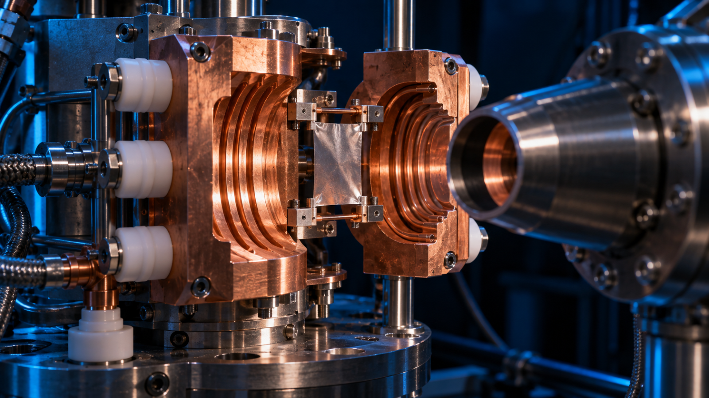
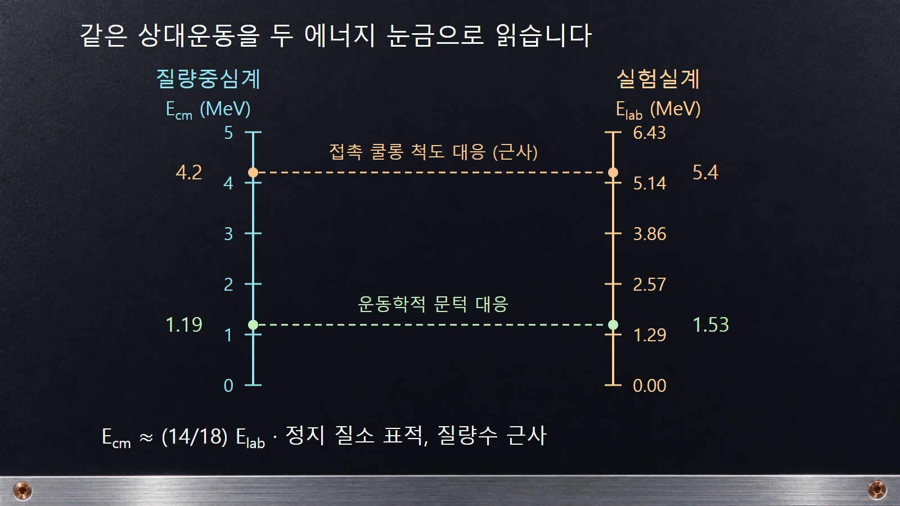
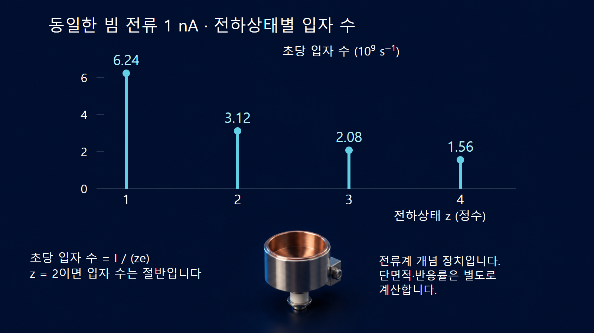

질량·에너지와 핵반응 · 033
하전입자 핵반응
문턱·장벽·감속을 구분하고 빔 전류를 반응률로 연결합니다

양성자, 중양성자, 알파입자와 같은 하전입자를 원자핵에 입사시키면 핵의 구성이나 상태를 바꾸는 반응이 일어날 수 있습니다. 양전하끼리의 전기적 반발, 반응 전후의 질량 차이, 표적 안에서의 감속이 함께 작용합니다. 장벽을 넘을 에너지만 확인한다고 실제 반응률이 정해지지는 않습니다.
1. 입사입자와 방출입자를 먼저 읽습니다
X(a,b)Y라는 표기에서 X는 표적, a는 입사입자, b는 방출입자, Y는 잔류핵입니다. 예를 들어 14N(α,p)17O는 질소-14에 알파입자가 들어오고 양성자가 나가며 산소-17이 남는 반응입니다. 질량수는 14 + 4 = 17 + 1, 원자번호는 7 + 2 = 8 + 1로 보존됩니다.
‘하전입자 반응’이라는 표현은 입사입자가 하전입자인 경우와, 중성자 반응에서 하전입자가 방출되는 경우에 모두 등장할 수 있습니다. 이 글의 중심은 전자입니다. 10B(n,α)7Li처럼 입구가 중성자인 반응은 출구에 알파입자가 있어도 입사 중성자가 쿨롱 반발을 겪는 반응은 아닙니다. 반응 표기의 괄호 앞뒤를 함께 확인해야 합니다.
2. 쿨롱 장벽은 접근에 관한 에너지 척도입니다
멀리 떨어진 두 핵의 전하를 z1e와 z2e로 나타내면 쿨롱 퍼텐셜은 VC(r) ≈ 1.440 z1z2/r MeV입니다. 여기서 r은 fm 단위의 중심 간 거리입니다. 거리가 짧아질수록 양전하 사이의 반발 퍼텐셜이 커집니다. 핵력이 유효해지는 가까운 거리까지 접근할 수 있는지가 반응에 영향을 줍니다.
알파입자와 질소-14의 접촉거리를 R = 1.2(41/3 + 141/3) fm으로 거칠게 추정하면 약 4.80 fm입니다. 전하수는 2와 7이므로 접촉 쿨롱 에너지는 약 1.440 × 14/4.80 = 4.2 MeV입니다. 이는 구형 반지름 모형의 규모 추정이며 정확한 장벽 높이나 반응 개시 에너지로 사용하지 않습니다.
이 퍼텐셜과 비교할 상대운동 에너지는 질량중심계 에너지입니다. 정지 표적의 비상대론적 근사에서 Ecm = M/(M + ma) Elab입니다. 또한 양자역학적 터널링 때문에 고전적 장벽보다 낮은 에너지에서도 반응이 가능합니다. 반대로 장벽보다 높아도 특정 출구 채널이 반드시 형성되는 것은 아닙니다.
3. 질소-14 반응의 문턱과 장벽을 비교합니다
예시 1｜14N(α,p)17O의 바닥상태 반응에 AME2020 중성원자 질량을 적용합니다. 헬륨-4는 4.00260325413 u, 질소-14는 14.00307400425 u, 산소-17은 16.99913175595 u, 수소-1은 1.007825031898 u입니다. 초기 질량 합에서 최종 질량 합을 빼면 −0.001279529468 u입니다.
1 u의 에너지 환산값 약 931.494 MeV를 곱하면 Q ≈ −1.192 MeV입니다. 양변의 전자 수가 각각 9개여서 전자 정지질량 항은 상쇄됩니다. 다만 전자 결합에너지 차이는 남으므로 이 원자질량 계산을 맨핵 반응의 극정밀값으로 해석하지 않습니다. 음의 Q는 최종 정지질량을 만드는 데 에너지가 필요함을 뜻합니다.
질량비를 4/14로 근사하면 정지 표적에 대한 입사 알파입자의 운동학적 문턱은 Eth ≈ −Q(1 + 4/14) ≈ 1.53 MeV입니다. 앞 절의 접촉 쿨롱 에너지 약 4.2 MeV와는 의미도 좌표계도 다릅니다. 문턱은 에너지·운동량 보존이 허용하는 최소 입사 에너지이고, 장벽은 상대운동의 접근과 투과 확률에 관련됩니다.
| 양 | 이 예시의 근사값 | 질문 |
|---|---|---|
| 반응 Q값 | −1.192 MeV | 반응 전후 정지질량 차이에 에너지가 필요한가요? |
| 실험실 입사 문턱 | 약 1.53 MeV | 정지 표적에서 최종 상태가 운동학적으로 가능한가요? |
| 접촉 쿨롱 퍼텐셜 | 약 4.2 MeV | 가까이 접근하는 상대운동에 어떤 반발이 작용하나요? |
| 실제 반응률 | 위 세 값만으로 정하지 않습니다. | 에너지별 단면적·입사량·표적 조건은 무엇인가요? |

4. 빔 전류를 입자 수로 바꿀 때 전하상태를 반영합니다
예시 2｜가상 얇은 표적에 1 nA의 양성자 빔이 입사한다고 가정합니다. 양성자 하나의 전하가 e = 1.602176634 × 10−19 C이므로 초당 입자 수는 I/e = 10−9/e ≈ 6.24 × 109 s−1입니다. 이 값은 초당 입사 입자 수이며 빔 단면적이 주어지지 않았으므로 아직 단위면적당 입사율은 아닙니다.
표적의 면적당 원자 수 nt = 1.0 × 1018 cm−2, 해당 에너지의 가상 반응 단면적 σ = 100 mb = 10−25 cm2라면, 입자당 반응 확률은 얇은 표적 근사에서 ntσ = 10−7입니다. 빔이 전부 표적에 닿으면 반응률은 (I/e)ntσ ≈ 624 s−1입니다. 이 예는 실제 질소 반응의 수율을 계산한 것이 아닙니다.
같은 전류의 전하상태 +2 이온 빔은 입자당 2e를 운반하므로 입자 수가 절반입니다. 일반식은 I/(ze)입니다. 다른 이온에 양성자의 단면적을 그대로 적용해서는 안 되지만, 동일한 가상 반응 확률을 비교 조건으로 두면 약 312 s−1가 됩니다. 입자 수 차이와 핵반응 단면적 차이는 별개의 효과입니다.

5. 두꺼운 표적에서는 이온의 에너지가 계속 바뀝니다
하전입자는 물질의 전자와 원자핵에 에너지를 전달하며 감속합니다. 저지능 S(E)는 경로 길이당 평균 에너지 손실을 나타냅니다. 두꺼운 표적에서는 입구 에너지 하나의 단면적만 곱하는 대신, 깊이에 따른 에너지와 해당 반응 단면적을 함께 고려해야 합니다. 반응이 가능한 에너지 구간을 지나 얼마나 이동하는지가 생성량에 영향을 줍니다.
NIST의 PSTAR·ASTAR에서 쓰는 ‘핵 저지능’은 탄성 충돌로 반동 원자에 에너지를 전달하는 성분입니다. 이름에 ‘핵’이 들어간다고 원자핵이 다른 핵종으로 바뀌는 핵반응 단면적을 뜻하지 않습니다. 전자 저지능, 핵 저지능, 핵변환 반응은 목적과 단위가 다른 자료입니다. IAEA의 이온빔 분석 핵자료와 NIST의 저지능 자료를 서로 대체할 수 없습니다.
6. 생성률과 검출 계수율은 다릅니다
위의 약 624 s−1는 전체 반응 수의 계산값입니다. 특정 각도의 검출기는 그중 일부 방출입자만 받아들이며, 각도별 방출 분포·입체각·표적 내 에너지 손실·검출 효율의 영향을 받습니다. 검출 계수율이 작다는 이유만으로 반응 단면적 자체가 작다고 결론 내리지 않습니다.
방사성 핵종을 만드는 경우에도 생성률을 최종 방사능과 혼동하지 않습니다. 조사 중 붕괴, 조사시간, 냉각시간 및 다른 생성·소멸 채널이 개입합니다. 입사입자의 에너지 손실과 표적 발열은 생성량과 별도로 다뤄야 합니다. 따라서 실험 결과를 비교할 때 입사에너지, 전하상태, 전류, 표적 면밀도, 검출 조건이 함께 제시되어야 합니다.
7. 세 종류의 ‘에너지 조건’을 따로 확인합니다
하전입자 핵반응은 먼저 Q값과 운동학적 문턱으로 가능 조건을 확인하고, 상대운동의 장벽 투과와 핵반응 단면적으로 확률을 판단하며, 물질 내 감속으로 실제 표적에서 지나는 에너지 구간을 계산합니다. 이 세 단계의 물리량을 하나의 ‘필요 에너지’로 합쳐 부르면 오류가 생깁니다.
반응 표기, 좌표계, 이온 전하상태를 명확하게 적으면 간단한 계산도 실제 측정값을 해석하는 기준이 됩니다. 입구에 하전입자가 있는지, 출구에 하전입자가 있는지도 구분하여 중성자 유도 반응에 하전입자의 입사 장벽을 잘못 적용하지 않습니다.